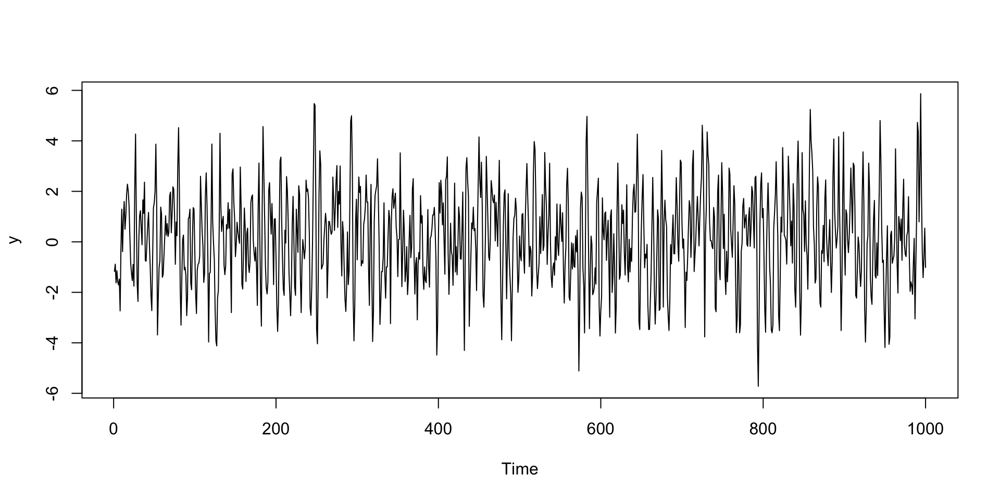

Processos autoregressivos - AR(p): Parte III
ME607 - Séries Temporais
Prof. Carlos Trucíos
ctrucios@unicamp.br
ctrucios@unicamp.br
Instituto de Matemática, Estatística e Computação Científica (IMECC),
Universidade Estadual de Campinas (UNICAMP).
Introdução
Introdução
- Já aprendimos a identificar processos AR(p) através da ACF e PACF.
- Aprendimos também como estimar os parâmetros do modelo.
- Agora aprenderemos a fazer diagnóstico do modelo e previsão.
Diagnóstico
Diagnóstico
Como sabermos se o modelo ajustado capturou a dinâmica dos dados?

Diagnóstico do modelo!
Na formulação do modelo, assumiu-se que os erros são ruido branco. O mesmo deve acontecer com os resíduos estimados!
Diagnóstico
Como verificar se os resíduos são ruido branco?
- ACF
- PACF
- Testes de Ljung-Box
- Homocedasticidade
- Normalidade*
Rejeitarmos a hipótese de que erros são ruido branco implica que ainda há informação não capturada pelo modelo (o que pode gerar previsões ruins) que pode ser melhor explorada por outros modelos (e pode gerar melhores previsões). Neste caso, descarta-se o modelo ajustado e testam-se outras possibilidades até obtermos um modelo em que não podemos rejeitar a hipótese de que os erros são ruido branco.
Diagnóstico
Seja o processo AR(p) \[Y_t = c + \phi_1Y_{t-1} + \cdots + \phi_p Y_{t-p} + \epsilon_t.\]
Definimos os resíduos como \[\hat{\epsilon}_t = y_t - \hat{c}- \hat{\phi}_1 y_{t-1} - \cdots - \hat{\phi}_p y_{t-p}\]
A primeira forma de verificar se os erros (\(\{ \epsilon_t \}\)) são ruido branco é através do gráfico de sequência, ACF e PACF dos resíduos (\(\{ \hat{\epsilon_t} \}\)).
Se \(\{ \hat{\epsilon_t} \}_{t \geq 1}\) for ruido branco: (a) nenhum padrão deveria ser observado no gráfico de sequência, (b) ACF não deveriam indicar \(\rho_k \neq 0\) e (c) PACF não deveriam indicar \(\phi_{kk} \neq 0\).
Diagnóstico
Code
Series: y
Model: AR(2) w/ mean
Coefficients:
constant ar1 ar2
0.0918 0.7805 -0.4574
sigma^2 estimated as 2.001
AIC = -566.14 AICc = -566.11 BIC = -551.41# A tsibble: 1,000 x 6 [1D]
# Key: .model [1]
.model t y .fitted .resid .innov
<chr> <date> <dbl> <dbl> <dbl> <dbl>
1 ar2 1995-01-11 -1.17 NA NA NA
2 ar2 1995-01-12 -0.884 NA NA NA
3 ar2 1995-01-13 -1.63 -0.0637 -1.56 -1.56
4 ar2 1995-01-14 -1.15 -0.773 -0.373 -0.373
5 ar2 1995-01-15 -1.57 -0.0591 -1.51 -1.51
6 ar2 1995-01-16 -1.71 -0.610 -1.10 -1.10
7 ar2 1995-01-17 -1.48 -0.522 -0.956 -0.956
8 ar2 1995-01-18 -2.73 -0.281 -2.45 -2.45
9 ar2 1995-01-19 -0.273 -1.37 1.09 1.09
10 ar2 1995-01-20 1.29 1.13 0.165 0.165
# … with 990 more rowsDiagnóstico
Teste LM
Também conhecido como teste Breusch-Godfrey, é utilizado para testar autocorrelação dos resíduos. Consiste em regredir os resíduos com seus valores defasados: \[\hat{\epsilon}_t = \beta_1 \hat{\epsilon}_{t-1} + \cdots + \beta_h \hat{\epsilon}_{t-h} + u_t.\]
\[H_0: \beta_1 = \beta_2 = \cdots = \beta_h = 0 \quad vs. \quad H_1: H_0 \text{ não é verdade}\]
Sob \(H_0\), \[LM_h = T \times R^2 \sim \chi^2_h,\] em que \(T\) é o tamanho da série e \(R^2\) é o coeficiente de determinação da regressão.
Diagnóstico: Teste LM
\[\hat{\epsilon}_t = \beta_1 \hat{\epsilon}_{t-1} + \beta_2 \hat{\epsilon}_{t-2} + \beta_3 \hat{\epsilon}_{t-3} + u_t.\]
\[H_0: \beta_1 = \beta_2 = \beta_3 = 0 \quad vs. \quad H_1: H_0 \text{ não é verdade}\]
Não rejeitamos \(H_0\)
Diagnóstico
Teste ARCH-LM
Serve para identificar sinais de heterocedasticidade condicional. Consiste em regredir os resíduos ao quadrado com seus valores defasados: \[\hat{\epsilon}_t^2 = \beta_1 \hat{\epsilon}_{t-1}^2 + \cdots + \beta_h \hat{\epsilon}_{t-h}^2 + u_t.\]
\[H_0: \beta_1 = \beta_2 = \cdots = \beta_h = 0 \quad vs. \quad H_1: H_0 \text{ não é verdade}\]
Sob \(H_0\), \[ARCH-LM_h = T \times R^2 \sim \chi^2_h,\] em que \(T\) é o tamanho da série e \(R^2\) é o coeficiente de determinação da regressão.
Diagnóstico: Teste ARCH-LM
\[\hat{\epsilon}_t^2 = \beta_1 \hat{\epsilon}_{t-1}^2 + \beta_2 \hat{\epsilon}_{t-2}^2 + \beta_3 \hat{\epsilon}_{t-3}^2 + u_t.\]
\[H_0: \beta_1 = \beta_2 = \beta_3 = 0 \quad vs. \quad H_1: H_0 \text{ não é verdade}\]
Não rejeitamos \(H_0\).
Previsão
Previsão
Seja o processo AR(1), \[Y_t = c + \phi Y_{t-1} + \epsilon_t, \quad t = 1, \cdots T\]
Estamos interessados em prever \(Y_{T + h}\) para \(h \geq 1\), dada a informação até o tempo \(T\), cuja notação é \(\hat{Y}_{T+h|T}\).
Mas como escolhermos \(\hat{Y}_{T+h|T}\)?
Escolheremos \(\hat{Y}_{T+h|T}\) a forma a minimizar o valor esperado do erro (de previsão) quadrático médio.
- Erro de previsão: \(e(h) = Y_{T+h} - \hat{Y}_{T+h|T}\).
- Queremos minimizar: \(\mathbb{E}(e(h))^2 = \mathbb{E}(Y_{T+h} - \hat{Y}_{T+h|T})^2\)
- Pode-se mostrar que, o valor que minimiza a função é \(\hat{Y}_{T+h|T} = \mathbb{E}_T(Y_{T+h})\)
Previsão
\[Y_t = c + \phi Y_{t-1} + \epsilon_t, \quad t = 1, \cdots T\]
- \(Y_{T+1} = c + \phi Y_{T} + \epsilon_{T+1}\)
- \(Y_{T+2} = c + \phi Y_{T+1} + \epsilon_{T+2}\)
- \(Y_{T+3} = c + \phi Y_{T+2} + \epsilon_{T+3}\)
- \(\vdots\)
- \(Y_{T+h} = c + \phi Y_{T+h-1} + \epsilon_{T+h}\)
- \(\mathbb{E}_T(Y_{T+1}) = c + \phi Y_{T}\)
- \(\mathbb{E}_T(Y_{T+2}) = c + \phi \mathbb{E}_T(Y_{T+1}) = c(1 + \phi) + \phi^2 Y_{T}\)
- \(\mathbb{E}_T(Y_{T+3}) = c + \phi \mathbb{E}_T(Y_{T+2}) = c(1 + \phi + \phi^2) + \phi^3 Y_{T}\)
- \(\vdots\)
- \(\mathbb{E}_T(Y_{T+h}) = c \times \sum_{i = 0}^{h-1}\phi^i + \phi^hY_{T}\)
Quando \(h \rightarrow \infty,\) \[\mathbb{E}_T(Y_{T+h}) = \dfrac{c}{1-\phi}.\]
Previsão
Erro de previsão
- \(e_T(1) = Y_{T+1} - \mathbb{E}_T(Y_{T+1}) = \epsilon_{T+1}\)
- \(e_T(2) = Y_{T+2} - \mathbb{E}_T(Y_{T+2}) = \phi\epsilon_{T+1} + \epsilon_{T+2}\)
- \(e_T(3) = Y_{T+3} - \mathbb{E}_T(Y_{T+3}) = \epsilon_{T+3} + \phi \epsilon_{T+2} + \phi^2 \epsilon_{T+1}\)
- \(\vdots\)
- \(e_t(h) = Y_{T+h} - \mathbb{E}_T(Y_{T+h}) = \epsilon_{T+h} + \phi \epsilon_{T+h-1} + \cdots + \phi^{h-1} \epsilon_{T+1}\)
\[\text{Para } h \geq 1\text{ :} \quad \mathbb{E}(e_T(h)) = 0, \quad \mathbb{V}(e_T(h)) = \sigma^2_{\epsilon} (1 + \phi^2 + \cdots + \phi^{2(h-1)})\]
Quando \(h \rightarrow \infty,\) \(\mathbb{V}(e_T(h))= \dfrac{\sigma^2_{\epsilon}}{1-\phi^2}.\)
Previsão
Sob normalidade, um intervalo de confiança \(100\times(1-\alpha)\%\) para \(Y_{T+h}\):
\[\underbrace{c \times \sum_{i = 0}^{h-1}\phi^i + \phi^hY_{T}}_{\mathbb{E}_T(Y_{T+h})} \pm z_{\alpha/2} \underbrace{\sigma_{\epsilon}\sqrt{1 + \phi^2 + \cdots + \phi^{2(h-1)}}}_{\sqrt{\mathbb{V}(e_T(h))}}\]
De forma semehante, resultados análogos para um AR(p) podem ser obtidos.
Previsão
AR(p)
\[Y_t = c + \phi_1 Y_{t-1} + \cdots + \phi_p Y_{t-p} + \epsilon_t.\]
- \(\mathbb{E}_T(Y_{T+1}) = c + \phi_1 Y_{T} + \cdots + \phi_p Y_{T-p+1} \rightarrow e_T(1) = \epsilon_{T+1}\)
- \(\mathbb{E}_T(Y_{T+2}) = c + \phi_1 \mathbb{E}_T(Y_{T+1}) + \cdots + \phi_p Y_{T-p+2} \rightarrow e_T(2) = \epsilon_{T+2} + \phi_1 \epsilon_{T+1}\)
- \(\vdots\)
- \(\mathbb{E}_T(Y_{T+p+1}) = c + \phi_1 \mathbb{E}_T(Y_{T+p}) + \cdots + \phi_p \mathbb{E}_T(Y_{T+1}) \rightarrow e_T(p+1) = \epsilon_{T+p+1} + \phi_1 \epsilon_{T+p} + \cdots + \phi_p \epsilon_{T+1}\)
- Para \(h \geq p+2,\)
- \(\mathbb{E}_T(Y_{T+h}) = c + \phi_1 \mathbb{E}_T(Y_{T+h-1}) + \cdots + \phi_p \mathbb{E}_T(Y_{T+h-p}),\)
- \(e_T(h) = \epsilon_{T+h} + \phi_1 e_T(T+h-1) + \cdots + \phi_p e_T(T+h-p)\)
Na prática, os valores dos parâmetros são desconhecidos e precisam ser estimados.
Mão na massa
Este exercício constiste em analisar duas séries temporais passando por todo o processo visto até aqui: (EDA, identificação, estimação, diagnostico e previsão).
Referências
- Bueno, R. D. L. D. S. (2018). Econometria de séries temporais. Capítulo 3.
- Brockwell, P.J & Davis, R.A. (2016). Introduction to Time Series and Forecasting, 3rd editions, Springer. Chapter 5.
- Morettin, P.A, & Toloi, C.M.C. (2006). Análise de Séries Temporais, 2ed, Blucher. Capítulo 9.
- Wei, W. (2005). Time Series Analysis: Univariate and Multivariate Methods, 2ed, Pearson. Chapter 5.

Carlos Trucíos (IMECC/UNICAMP) | ME607 - Séries Temporais | ctruciosm.github.io